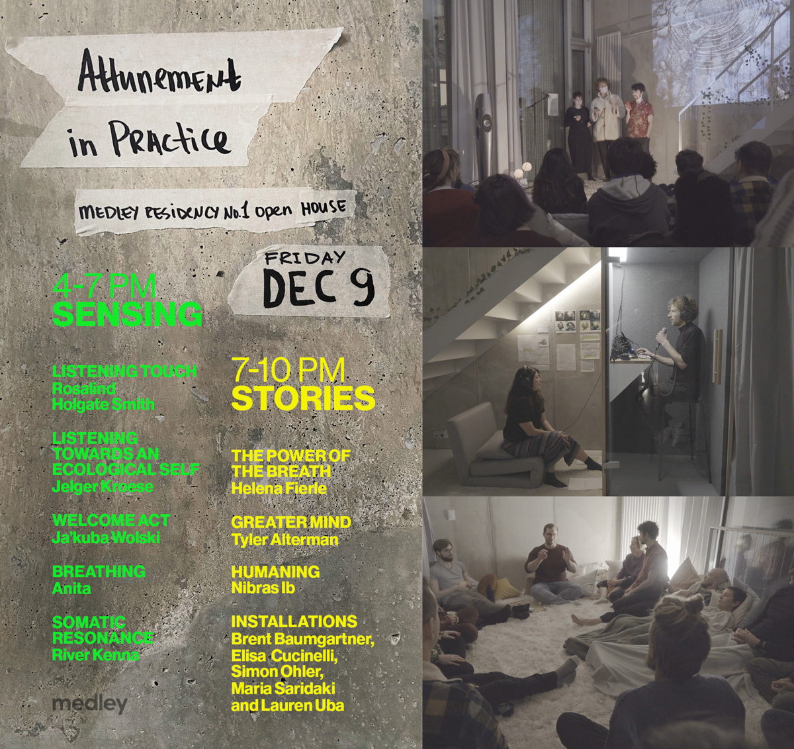
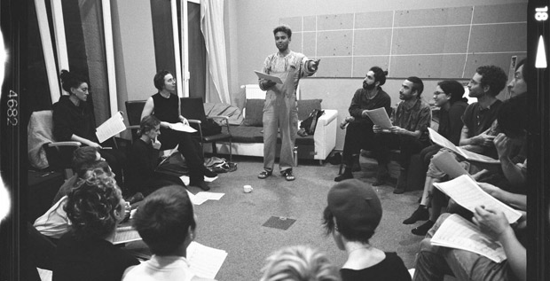
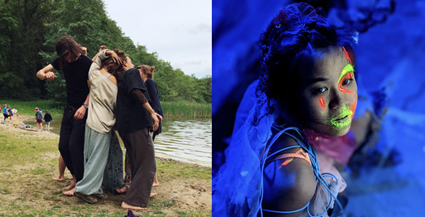

<!DOCTYPE html>
<html lang="en">
<head>
    <meta charset="UTF-8">
    <meta name="viewport" content="width=device-width, initial-scale=1.0">
    <title>Polina Tikk</title>
    <style>
    
        body {
            max-width: 620px;
            margin-left: 10vw;
            margin-right: 10vw;
            font-family: 'Lucida', sans-serif;
            background-image: linear-gradient(#9ad3ff, #fddd98,#d3fbfb)
        }
    
    
        h2 {
            font-weight: 300;
            font-size: 2.4em;
            line-height: 1.3em;
            letter-spacing: 0.4pt;
            margin-bottom: 0;

        }
        h2 + h2 {
            margin-top: 1em;
        }

        h3 {

            font-weight: 300;
            font-size: 1.6em;
            line-height: 1.4em;
            margin-bottom: 5px;
            

        }

        h2 + h3 {

            margin-top: 10px;
        }

        p { 
            line-height: 1.6;
            font-weight: regular;
            font-size: 1em;
            letter-spacing: 0.1pt;
        }
    
        a {
            text-underline-offset: 1pt; 
            color: #af55af;
        
        }

        img {
            margin-top: 20px;
            max-width: 100%;
            min-width: 300px;
            height: auto;
        }
    
        p:first-of-type {
            margin-top: 40px;
        }
    </style>
    </head>
<body>
    <h2 style="font-size:48px; font-weight:bold;
    
     "> POLINA TIKK</h2>

    <h2> Polina curates art events and residencies. Her curatorial focus lies in community building, searching for new sustainable society visions and bending approaches to experiencing art.
    Her artistic expression manifests through performance and singing.</h2>
    
    <p>Polina is a core team member of <a href="https://lernlabor.berlin/">Lernlabor</a>, a Berlin-based social business that creates innovative educational, cultural and artistic projects.</p>
    
    <p>She is a member of <a href="https://www.thepalacecollective.org/">the Palace Collective</a>, is an international creative network and events organisation focused on cross-disciplinary collaboration, self organisation and arts based community development.</p>    

    <p >Links: 
        <a href="https://www.instagram.com/pollytikk/" style="margin-right: 5px;">INSTAGRAM,</a>
     <a href="https://drive.google.com/file/d/1-bqacf1nPY_VXw86f89W5ncniOow43YV/view?usp=sharing">CV</a> 
    </p>


    <h2 style="margin-top: 60px;" >RECENT PROJECTS:</h2>

    
    
    <h2>Medley Residency</h2>
    <h3>Three-month long interdisciplinary residency encouraged 14 international participants to explore intersections of healing, technology, community, ecology, writing and somatic practices.           
    </h3>

    <a target="blank" ></a>

    <p style="font-size: 0.8em;">‘Attunement in Practice’ was a final exhibition inviting audience to engage with residents’ work through performances, installations, readings and somatic sessions.</p>
    <p>

        Fourteen residents (8 from Berlin, 6 from abroad) were offered 24/7 access to the Medley space in Berlin-Mitte and an invitation to gather, work, play, produce, host events, and explore the common space. <a target="blank" href="https://www.medley.berlin/residency ">More about Medley Residency</a>
        </p>
        <p>
    Polina's role: community manager, curator and producer 
    of final exhibition 
    
    
    <br>
    <i>Autumn 2022</i>
    
    </p>
    <br>


    <h2>Singen3000 Community Choir</h2>
    <h3>Grassroots community project evolved around passion for polyphonic singing and queer values.    
    </h3>
    <a target="blank" href="https://www.instagram.com/singen3000/"></a>
        <p>
            Apart from sheer beauty of singing together, the community choir Singen3000 has set its goal to increase the accessibility of communal singing for people without music education. This is achieved by integrating intuitive folk songs into the repertoire and creating audio learning materials for more complex arrangements. 
            In the season of 2022-2023 with the support of European Solidarity Corps the choir is aiming to extend its community and reach out to people displaced by Russian aggression in Ukraine. 
        <br>
        <a target="blank" href="https://www.instagram.com/singen3000/">Singen3000 Choir Instagram</a>
            </p>
            <iframe width="360" height="205" src="https://www.youtube.com/embed/18UKGjuHQKQ" title="YouTube video player" frameborder="0" allow="accelerometer; autoplay; clipboard-write; encrypted-media; gyroscope; picture-in-picture; web-share" allowfullscreen></iframe>

        <p>
            Polina's role: coaching, fundraising 
            <br>
    
        Funders: Solidarity Project - European Solidarity Corps
        <br>
        Musical director and conductor George Adje
        <br>
        <i>2021 - ongoing</i> </p>

        <br>


    
    <br>


    <h2>Climate Caravans</h2>
    <h3>A week of cross-disciplinary discussion, creation and exchange, culminating in a public exhibition of collaborative artworks engaging with the climate emergency.   
    </h3>

    <a target="blank" href="https://culturalfoundation.eu/stories/climate-caravans-advocating-european-solidarity-through-culture-climate-camps/"></a>
        <p>
        Climate Caravans is an Art and Ecology residency that brought artists, activists and researchers together to explore the themes of ecosocial balance. By exchanging practises, engaging with the environment and creating artworks the project aimed to draw attention to the climate emergency and foster resilience through exploring sustainable relationships and community-focused artistic practices.
        <br>
        <a target="blank" href="https://culturalfoundation.eu/stories/climate-caravans-advocating-european-solidarity-through-culture-climate-camps/">Read more about Climate Caravans</a>
            </p>
        <p>
            Polina's Role: Curator, Producer 
        <br>
            Funders: European Cultural Foundation, Bundeszentrale für politische Bildung.
            <br>
        Organisers: <a href="https://lernlabor.berlin/">Lernlabor Berlin</a> and <a href="https://eu-russia-csf.org/"></a>CSF</a>
        <br>
        Location: Haus des Wandels, Brandenburg, Germany
        <br>
        
        <i>May 2022</i> </p>

        
       

        <br>


        

        
    <h2 style="margin-top: 60px;"  >PARALLEL Residency</h2>

    <h3>New technologies are changing the way we organise our communities and societies. But where do these changes lead us? Towards a greater sense of connectedness? Or to atomisation and fragmentation?

        </h3>
        <br>
        
        <iframe width="560" height="315" src="https://www.youtube.com/embed/IlWTJ6fwoeA" title="YouTube video player" frameborder="0" allow="accelerometer; autoplay; clipboard-write; encrypted-media; gyroscope; picture-in-picture" allowfullscreen></iframe>
        
        <p>
        Connected through a common programme and characterised by continual dialogue PARALLEL provided the opportunity for 16 artists to engage with these questions and collaborate across borders and disciplines in the framework of a dual residency: in the heart of urban Tbilisi in Georgia and rural Schloss Schönow in Germany. 
        <br>
        <br>
        Residency culminated in the series of live performances and collaborative artworks, which were presented and curated online. 
        <br>
        
        <a target="blank" href="https://lernlabor.berlin/parallel-residency/">More about PARALLEL project</a>
        <br>
        <br>
        Polina's role: Concept, Curation, Production
        <br>

        Funders: EVZ Stiftung
            <br>
        Organisers: <a href="https://lernlabor.berlin/">Lernlabor</a> in Germany and <a href="https://propaganda.network/home/">Propaganda Network</a> in Georgia
        <br>
        <i>November 2021</i>
    </p>

        
        


        <h2 style="margin-top: 80px;">'a:part: Berlin-Poltava' hybrid art collaboration</h2>
        <h3>Separated by a distance of 1600km but interacting in real time, 17 young and emerging artists perform together and stretch the framework of our conceptual imagination. <a target="blank" href="https://lernlabor.berlin/apart-berlin-poltava-audiovisual-collaboration/">More about a:part project</a></h3>
        <a target="blank" href="https://lernlabor.berlin/apart-berlin-poltava-audiovisual-collaboration/"></a>
            <p>
            Polina's role: Concept, Curation, Production<br> 
            Funders: EVZ Stiftung
            <br>
            <i>December 2020</i></p>
            
            <iframe width="560" height="315" src="https://www.youtube.com/embed/Ki2kFe_sUkQ" title="YouTube video player" frameborder="0" allow="accelerometer; autoplay; clipboard-write; encrypted-media; gyroscope; picture-in-picture; web-share" allowfullscreen></iframe>
            <p style="font-size: 0.8em;" >DARK PLANET is one of seven hybrid a:part performances happening in real time with Vartan Markarian painting live in Virtual Reality and sharing through VR Cam Capture in Poltava, Ukraine and STACY.O playing live electronic set in Berlin, Germany.</p>

        

        <h2 style="margin-top: 80px;">'Urcylium' community theatre project inspired by the kingdom of fungi</h2>
        <h3>Fascinated‌ ‌by‌ ‌mycelial‌ ‌connections‌ ‌and‌ ‌rhizomatic‌ ‌modalities‌ 'Urcylium‌' ‌investigates‌ ‌the‌ ‌science‌ ‌of‌ ‌mycology,‌ ‌translating‌ ‌it‌ ‌into‌ performative‌ ‌arts‌ ‌and‌ ‌participatory‌ ‌processes.‌ </h3>
            
            <h3><a href="https://www.youtube.com/watch?v=nr_lyIR_3EA">Watch Trailer:</a></h3>
            <iframe width="560" height="315" src="https://www.youtube.com/embed/nr_lyIR_3EA?controls=0" title="YouTube video player" frameborder="0" allow="accelerometer; autoplay; clipboard-write; encrypted-media; gyroscope; picture-in-picture" allowfullscreen></iframe>

            <p>Polina's role: Co-Curation, Production
                
                <br>
                 Funders: Fonds Darstellende Künste 
                <br>
                <i>Gerswalde, 2021</i>
                </p> 

            <!-- <a  href="https://www.youtube.com/watch?v=nr_lyIR_3EA"></a> -->


            <h2 style="margin-top: 80px;">'Passport' music video</h2>
        <h3>A personal retrospective on the beginning of a new life by moving to a new place, where the passport is a necessary bureaucratic object.
            In video the frontal passport photo is being decomposed, creating tentions, blending the identities, accompanied by the motifs of exotic travels and border crossings.
             </h3>
             
            <h3><a href="https://youtu.be/U7NHcTHeWB4">Watch Video:</a></h3>
            <iframe width="560" height="315" src="https://www.youtube.com/embed/U7NHcTHeWB4" title="YouTube video player" frameborder="0" allow="accelerometer; autoplay; clipboard-write; encrypted-media; gyroscope; picture-in-picture" allowfullscreen></iframe>
            <p>Polina's role: Art Direction, Vocals, Guitar, Songwriting
                <br>
                <a href="https://www.youtube.com/user/pollytikk">Polly Tikk</a> Band <br>
                <i>Berlin, 2017</i> 
                
                
                </p>

        <h3 style="margin-top: 80px;">CONTACT: polina.tikk@gmail.com, +4917699676826</h3>
        <p style="margin-top: 60px;"><a href="https://polinatikk.org/impressum.html">Impressum</a></p>

</body>
</html>


